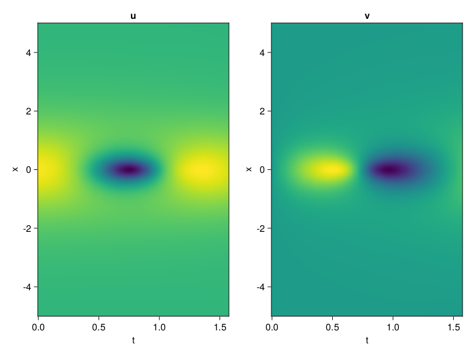
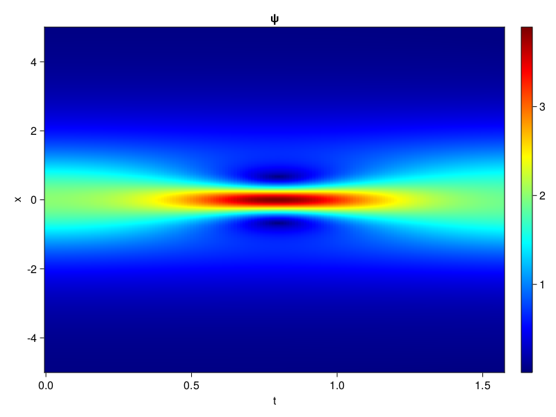
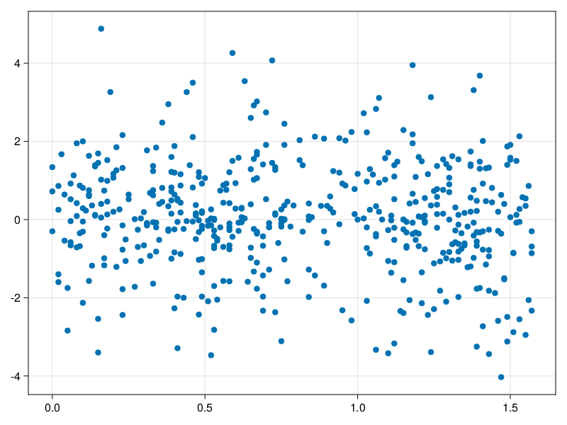

Schrödinger equation
The nonlinear Shrödinger equation is given by
\[\mathrm{i} \partial_t \psi=-\frac{1}{2} \sigma \partial_{x x} \psi-\beta|\psi|^2 \psi\]
Let $\sigma=\beta=1, \psi=u+v i$, the equation can be transformed into a system of partial differential equations
using ModelingToolkit, IntervalSets, Sophon, CairoMakie
using Optimization, OptimizationOptimJL
@parameters x,t
@variables u(..), v(..)
Dₜ = Differential(t)
Dₓ² = Differential(x)^2
eqs=[Dₜ(u(x,t)) ~ -Dₓ²(v(x,t))/2 - (abs2(v(x,t)) + abs2(u(x,t))) * v(x,t),
Dₜ(v(x,t)) ~ Dₓ²(u(x,t))/2 + (abs2(v(x,t)) + abs2(u(x,t))) * u(x,t)]
bcs = [u(x, 0.0) ~ 2sech(x),
v(x, 0.0) ~ 0.0,
u(-5.0, t) ~ u(5.0, t),
v(-5.0, t) ~ v(5.0, t)]
domains = [x ∈ Interval(-5.0, 5.0),
t ∈ Interval(0.0, π/2)]
@named pde_system = PDESystem(eqs, bcs, domains, [x,t], [u(x,t),v(x,t)])\[ \begin{align} \frac{\mathrm{d}}{\mathrm{d}t} u\left( x, t \right) =& - \frac{1}{2} \frac{\mathrm{d}^{2}}{\mathrm{d}x^{2}} v\left( x, t \right) - \left( \left|u\left( x, t \right)\right|^{2} + \left|v\left( x, t \right)\right|^{2} \right) v\left( x, t \right) \\ \frac{\mathrm{d}}{\mathrm{d}t} v\left( x, t \right) =& \frac{1}{2} \frac{\mathrm{d}^{2}}{\mathrm{d}x^{2}} u\left( x, t \right) + \left( \left|u\left( x, t \right)\right|^{2} + \left|v\left( x, t \right)\right|^{2} \right) u\left( x, t \right) \end{align} \]
pinn = PINN(u = Siren(2,1; hidden_dims=16,num_layers=4, omega = 1.0),
v = Siren(2,1; hidden_dims=16,num_layers=4, omega = 1.0))
sampler = QuasiRandomSampler(500, (200,200,20,20))
strategy = NonAdaptiveTraining(1,(10,10,1,1))
prob = Sophon.discretize(pde_system, pinn, sampler, strategy)OptimizationProblem. In-place: true
u0: ComponentVector{Float64}(u = (layer_1 = (weight = [-0.39947593212127686 -0.41854310035705566; -0.062037765979766846 0.2148139476776123; … ; -0.18007689714431763 0.04642587900161743; -0.13367515802383423 -0.4700297713279724], bias = [0.0; 0.0; … ; 0.0; 0.0;;]), layer_2 = (weight = [0.4974697232246399 -0.345131516456604 … -0.3106996715068817 0.2562094032764435; 0.5014294385910034 -0.6062255501747131 … 0.44114720821380615 0.05157600715756416; … ; -0.21020305156707764 0.3231932520866394 … 0.4527430534362793 0.004493106622248888; -0.3443987965583801 0.27099594473838806 … 0.4100082218647003 -0.09019435197114944], bias = [0.0; 0.0; … ; 0.0; 0.0;;]), layer_3 = (weight = [-0.029909975826740265 -0.01751004159450531 … 0.13011722266674042 0.29306983947753906; 0.10616152733564377 0.00392457889392972 … 0.44438114762306213 -0.19104669988155365; … ; 0.05735757201910019 0.4574824571609497 … 0.5331673622131348 -0.3094596266746521; -0.1783287078142166 0.4902060329914093 … -0.21084626019001007 0.22233740985393524], bias = [0.0; 0.0; … ; 0.0; 0.0;;]), layer_4 = (weight = [-0.4856831431388855 0.11965975910425186 … -0.3117925524711609 -0.4752976596355438; 0.30641913414001465 0.07822869718074799 … -0.12095879763364792 0.4710856080055237; … ; 0.05539371073246002 -0.507544219493866 … -0.11615025997161865 -0.17331627011299133; 0.3209470510482788 -0.40030863881111145 … -0.5967734456062317 0.3578459322452545], bias = [0.0; 0.0; … ; 0.0; 0.0;;]), layer_5 = (weight = [0.16062018275260925 -0.30375242233276367 … 0.4499482214450836 0.3352122902870178], bias = [0.0;;])), v = (layer_1 = (weight = [-0.2646371126174927 0.4732890725135803; 0.4337613582611084 0.2193956971168518; … ; 0.25567346811294556 0.017971813678741455; 0.29378455877304077 0.452827513217926], bias = [0.0; 0.0; … ; 0.0; 0.0;;]), layer_2 = (weight = [-0.3027227520942688 -0.44722187519073486 … -0.027505557984113693 0.32284629344940186; -0.5578739643096924 0.4860582947731018 … -0.33885806798934937 -0.4377784729003906; … ; -0.36371591687202454 0.12769995629787445 … 0.07764425873756409 0.06580613553524017; -0.056521203368902206 0.5949516296386719 … 0.19997283816337585 0.3054561913013458], bias = [0.0; 0.0; … ; 0.0; 0.0;;]), layer_3 = (weight = [-0.0601736381649971 0.4029029905796051 … -0.37861084938049316 -0.18603463470935822; -0.22630301117897034 -0.25290045142173767 … -0.15780849754810333 -0.5259522199630737; … ; 0.01067661214619875 0.48712795972824097 … -0.17103631794452667 -0.0025112165603786707; -0.2938348948955536 -0.004063863772898912 … 0.461029052734375 0.082101009786129], bias = [0.0; 0.0; … ; 0.0; 0.0;;]), layer_4 = (weight = [0.37073761224746704 0.2449047863483429 … -0.20037725567817688 0.34393343329429626; -0.5006258487701416 -0.5060728192329407 … 0.3518485128879547 0.30360352993011475; … ; 0.5412951111793518 0.6024255752563477 … -0.4265933334827423 -0.2791225016117096; 0.044374290853738785 -0.017756124958395958 … -0.555079460144043 0.24947409331798553], bias = [0.0; 0.0; … ; 0.0; 0.0;;]), layer_5 = (weight = [0.5924683213233948 0.08738507330417633 … -0.3164188861846924 0.14460614323616028], bias = [0.0;;])))Now we train the neural nets and resample data while training.
function train(pde_system, prob, sampler, strategy, resample_period = 500, n=10)
bfgs = BFGS()
res = Optimization.solve(prob, bfgs; maxiters=2000)
for i in 1:n
data = Sophon.sample(pde_system, sampler)
prob = remake(prob; u0=res.u, p=data)
res = Optimization.solve(prob, bfgs; maxiters=resample_period)
end
return res
end
res = train(pde_system, prob, sampler, strategy)u: ComponentVector{Float64}(u = (layer_1 = (weight = [-0.3856151546366005 -0.2988615464787827; -0.4016149873263427 0.3708528487222366; … ; -0.11555509863375128 0.07898992537917632; -0.4140005259431304 -0.602000852998132], bias = [0.0628724041864441; 0.03703014429887801; … ; -0.08822812089432229; 0.4372041991504369;;]), layer_2 = (weight = [0.5925090885319155 -0.4251038048016363 … -0.27445912947202283 0.19409403875823739; 0.5511972628715794 -0.6508464586317142 … 0.5679939259240395 0.3301113992590399; … ; 0.22692502567255676 0.29433338406023196 … 0.4060986045161578 0.17331244012570637; -0.7495083990191825 0.16243548656950965 … 0.37945350518510645 -0.3082602637298096], bias = [-0.03499120567665315; -0.12989802722702895; … ; -0.18315610453543268; 0.09913448473167419;;]), layer_3 = (weight = [0.2497345681631851 0.18796217170887983 … -0.10870620410246479 0.19020563055455367; 0.3055550308996989 0.19126994354615034 … 0.18338292061251865 -0.21131140433109918; … ; -0.11600279855455436 0.7491035209292984 … 0.49269095254786943 0.14849927889743658; -0.3160533471811661 0.214115920227706 … -0.16654230815583046 0.11143883046911122], bias = [-0.06329690042510669; -0.01956859507327856; … ; 0.3613270476732239; 0.23024727985611476;;]), layer_4 = (weight = [-0.28435734712094485 -0.0681157834015908 … -0.1882874377193788 -0.2738303575144488; 0.3916105618496034 0.08059416896981214 … 0.11273702400571965 0.7631038530385668; … ; -0.1834725627399772 -0.46545097460295864 … 0.2728837609039097 -0.6651151509621375; 0.2715871829631172 -0.628544533829809 … -0.4543006589311394 0.8731441191591378], bias = [-0.37801361283875345; -0.1937845113785342; … ; -0.08546736798358137; 0.00935314210266652;;]), layer_5 = (weight = [-0.6418882658604003 -0.06531906973369464 … 0.7136045167592322 0.8199963258051703], bias = [-0.17891544418035646;;])), v = (layer_1 = (weight = [-0.07401579294111144 0.23611472881669712; 0.7759796022634545 0.4573127254076718; … ; 0.049479643091226606 -0.23214357132579116; 0.24276272216784725 0.8604795071805461], bias = [0.19802742767648374; -0.1352728022660073; … ; -0.08782119536102437; -0.6141403297303377;;]), layer_2 = (weight = [-0.10924729784361477 -0.4664704774392055 … -0.3034529336368365 0.5076955390375477; -0.5765962571027438 0.15881872732968183 … -0.31153930657165546 -0.3416890069221446; … ; -0.38111425268077354 0.23075126326568857 … 0.13782962333246815 0.38595672264494923; 0.22915237649551273 0.9075727077396086 … 0.12114486954299754 0.9987756971372834], bias = [0.023655819586966317; 0.11588756692459827; … ; -0.2588369476796322; -0.2209360329942465;;]), layer_3 = (weight = [-0.5326869710786158 0.2903587520605386 … -0.1670337079482274 -0.6004136963589467; -0.13042262986440606 -0.048375471082160976 … -0.009473256656478338 -0.3232384584275953; … ; 0.20983541699341954 0.41453644622470026 … -0.08366330523801824 0.02323863794254439; -0.19269853964154254 -0.10787961992108913 … 0.2821943852414751 0.24372696983710604], bias = [0.030349584506456913; 0.1330504515371604; … ; 0.039178019852904374; -0.04180791627867713;;]), layer_4 = (weight = [0.3856338450031318 0.05416101116441302 … -0.03770198073951948 0.2563182909418033; -0.4530248758428562 -0.3315163590561662 … 0.2764504745130355 0.2609716519694263; … ; 0.9290178906991576 0.6282262505559449 … 0.015966575814349234 -0.31810344710010174; 0.16188080563365487 0.14178554842635832 … -0.5858548528328779 -0.014845977965217473], bias = [-0.4030312664019552; -0.14671388758543794; … ; 0.506520986990021; -0.13713134611199193;;]), layer_5 = (weight = [1.021929760999918 0.12698621480368086 … -0.1892113120597236 0.3163976882966933], bias = [0.026334132911725844;;])))phi = pinn.phi
ps = res.u
xs, ts= [infimum(d.domain):0.01:supremum(d.domain) for d in pde_system.domain]
u = [sum(phi.u(([x,t]), ps.u)) for x in xs, t in ts]
v = [sum(phi.v(([x,t]), ps.v)) for x in xs, t in ts]
ψ = @. sqrt(u^2+ v^2)
axis = (xlabel="t", ylabel="x", title="u")
fig, ax1, hm1 = heatmap(ts, xs, u', axis=axis)
ax2, hm2= heatmap(fig[1, end+1], ts, xs, v', axis= merge(axis, (; title="v")))
display(fig)
axis = (xlabel="t", ylabel="x", title="ψ")
fig, ax1, hm1 = heatmap(ts, xs, ψ', axis=axis, colormap=:jet)
Colorbar(fig[:, end+1], hm1)
display(fig)
Customize Sampling
Bascially any sampling method is supportted. For example we can sample data according to the predicted solution.
using StatsBase
data = vec([[x, t] for x in xs, t in ts])
wv = vec(ψ)
new_data = wsample(data, wv, 500)
new_data = reduce(hcat, new_data)
fig, ax = scatter(new_data[2,:], new_data[1,:])
prob.p[1] = new_data
prob.p[2] = new_data
prob = remake(prob; u0 = res.u)
# res = Optimization.solve(prob, bfgs; maxiters=1000)OptimizationProblem. In-place: true
u0: ComponentVector{Float64}(u = (layer_1 = (weight = [-0.3856151546366005 -0.2988615464787827; -0.4016149873263427 0.3708528487222366; … ; -0.11555509863375128 0.07898992537917632; -0.4140005259431304 -0.602000852998132], bias = [0.0628724041864441; 0.03703014429887801; … ; -0.08822812089432229; 0.4372041991504369;;]), layer_2 = (weight = [0.5925090885319155 -0.4251038048016363 … -0.27445912947202283 0.19409403875823739; 0.5511972628715794 -0.6508464586317142 … 0.5679939259240395 0.3301113992590399; … ; 0.22692502567255676 0.29433338406023196 … 0.4060986045161578 0.17331244012570637; -0.7495083990191825 0.16243548656950965 … 0.37945350518510645 -0.3082602637298096], bias = [-0.03499120567665315; -0.12989802722702895; … ; -0.18315610453543268; 0.09913448473167419;;]), layer_3 = (weight = [0.2497345681631851 0.18796217170887983 … -0.10870620410246479 0.19020563055455367; 0.3055550308996989 0.19126994354615034 … 0.18338292061251865 -0.21131140433109918; … ; -0.11600279855455436 0.7491035209292984 … 0.49269095254786943 0.14849927889743658; -0.3160533471811661 0.214115920227706 … -0.16654230815583046 0.11143883046911122], bias = [-0.06329690042510669; -0.01956859507327856; … ; 0.3613270476732239; 0.23024727985611476;;]), layer_4 = (weight = [-0.28435734712094485 -0.0681157834015908 … -0.1882874377193788 -0.2738303575144488; 0.3916105618496034 0.08059416896981214 … 0.11273702400571965 0.7631038530385668; … ; -0.1834725627399772 -0.46545097460295864 … 0.2728837609039097 -0.6651151509621375; 0.2715871829631172 -0.628544533829809 … -0.4543006589311394 0.8731441191591378], bias = [-0.37801361283875345; -0.1937845113785342; … ; -0.08546736798358137; 0.00935314210266652;;]), layer_5 = (weight = [-0.6418882658604003 -0.06531906973369464 … 0.7136045167592322 0.8199963258051703], bias = [-0.17891544418035646;;])), v = (layer_1 = (weight = [-0.07401579294111144 0.23611472881669712; 0.7759796022634545 0.4573127254076718; … ; 0.049479643091226606 -0.23214357132579116; 0.24276272216784725 0.8604795071805461], bias = [0.19802742767648374; -0.1352728022660073; … ; -0.08782119536102437; -0.6141403297303377;;]), layer_2 = (weight = [-0.10924729784361477 -0.4664704774392055 … -0.3034529336368365 0.5076955390375477; -0.5765962571027438 0.15881872732968183 … -0.31153930657165546 -0.3416890069221446; … ; -0.38111425268077354 0.23075126326568857 … 0.13782962333246815 0.38595672264494923; 0.22915237649551273 0.9075727077396086 … 0.12114486954299754 0.9987756971372834], bias = [0.023655819586966317; 0.11588756692459827; … ; -0.2588369476796322; -0.2209360329942465;;]), layer_3 = (weight = [-0.5326869710786158 0.2903587520605386 … -0.1670337079482274 -0.6004136963589467; -0.13042262986440606 -0.048375471082160976 … -0.009473256656478338 -0.3232384584275953; … ; 0.20983541699341954 0.41453644622470026 … -0.08366330523801824 0.02323863794254439; -0.19269853964154254 -0.10787961992108913 … 0.2821943852414751 0.24372696983710604], bias = [0.030349584506456913; 0.1330504515371604; … ; 0.039178019852904374; -0.04180791627867713;;]), layer_4 = (weight = [0.3856338450031318 0.05416101116441302 … -0.03770198073951948 0.2563182909418033; -0.4530248758428562 -0.3315163590561662 … 0.2764504745130355 0.2609716519694263; … ; 0.9290178906991576 0.6282262505559449 … 0.015966575814349234 -0.31810344710010174; 0.16188080563365487 0.14178554842635832 … -0.5858548528328779 -0.014845977965217473], bias = [-0.4030312664019552; -0.14671388758543794; … ; 0.506520986990021; -0.13713134611199193;;]), layer_5 = (weight = [1.021929760999918 0.12698621480368086 … -0.1892113120597236 0.3163976882966933], bias = [0.026334132911725844;;])))